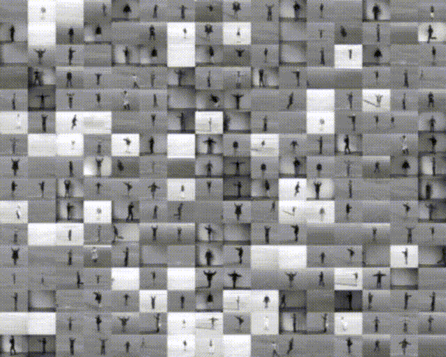
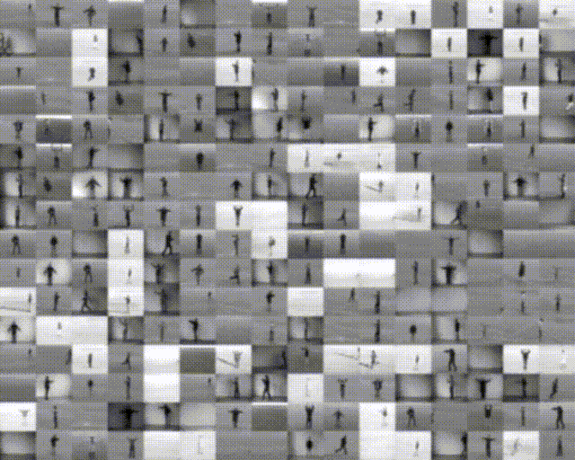

LVOGAN
We show that our model not just generalizes better, but produces better looking videos. There are no features in the videos that are inconsistent with the real frames and even though ours perform poorer in resolution, our videos look more real since they capture the features of the videos well.
Our model
Random rate and content
Slowed down version
Sped up version

Baseline
Random rate and content